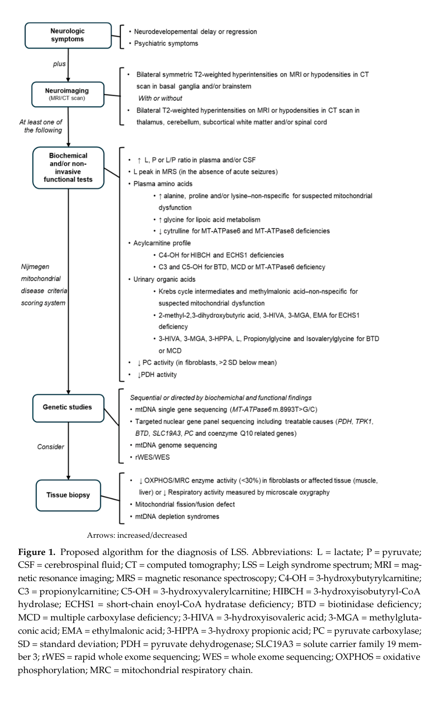

Leigh syndrome (subacute necrotizing encephalomyelopathy) is a genetically heterogeneous mitochondrial disorder of cellular energy metabolism. It is the most common pediatric presentation of mitochondrial disease and is defined neuropathologically by bilateral, symmetric necrotic lesions of the basal ganglia, thalamus, and brainstem. The shared biochemical defect is impaired oxidative phosphorylation/ATP production, most frequently from isolated complex I deficiency, complex IV (cytochrome c oxidase) deficiency, MT-ATP6 (complex V) dysfunction, or pyruvate dehydrogenase complex deficiency. More than 75 causative genes are known across the mitochondrial and nuclear genomes. Onset is typically in infancy or early childhood with psychomotor regression, hypotonia, brainstem and basal-ganglia dysfunction, and lactic acidosis.
Ask a research question about Leigh Syndrome. OpenScientist will conduct autonomous deep research using the Disorder Mechanisms Knowledge Base and PubMed literature (typically 10-30 minutes).
Do not include personal health information in your question. Questions and results are cached in your browser's local storage.
name: Leigh Syndrome
creation_date: '2026-05-30T00:00:00Z'
description: >-
Leigh syndrome (subacute necrotizing encephalomyelopathy) is a genetically
heterogeneous mitochondrial disorder of cellular energy metabolism. It is the
most common pediatric presentation of mitochondrial disease and is defined
neuropathologically by bilateral, symmetric necrotic lesions of the basal
ganglia, thalamus, and brainstem. The shared biochemical defect is impaired
oxidative phosphorylation/ATP production, most frequently from isolated
complex I deficiency, complex IV (cytochrome c oxidase) deficiency, MT-ATP6
(complex V) dysfunction, or pyruvate dehydrogenase complex deficiency. More
than 75 causative genes are known across the mitochondrial and nuclear
genomes. Onset is typically in infancy or early childhood with psychomotor
regression, hypotonia, brainstem and basal-ganglia dysfunction, and lactic
acidosis.
category: Mendelian
parents:
- hereditary disease
- mitochondrial disease
disease_term:
preferred_term: Leigh syndrome
term:
id: MONDO:0009723
label: Leigh syndrome
has_subtypes:
- name: MILS
display_name: Maternally-inherited Leigh syndrome (MT-ATP6)
description: >-
Maternally inherited Leigh syndrome caused by pathogenic mitochondrial DNA
variants, most commonly MT-ATP6 nucleotide 8993 substitutions, with
severity dependent on heteroplasmy.
subtype_term:
preferred_term: maternally-inherited Leigh syndrome
term:
id: MONDO:0016814
label: maternally-inherited Leigh syndrome
- name: French-Canadian
display_name: French-Canadian (Saguenay-Lac-Saint-Jean) type
description: >-
Congenital lactic acidosis of the Saguenay-Lac-Saint-Jean region caused by
biallelic LRPPRC variants, presenting as a complex IV (cytochrome c
oxidase)-deficient Leigh syndrome.
subtype_term:
preferred_term: congenital lactic acidosis, Saguenay-Lac-Saint-Jean type
term:
id: MONDO:0009069
label: congenital lactic acidosis, Saguenay-Lac-Saint-Jean type
- name: Leigh with cardiomyopathy
display_name: Leigh syndrome with cardiomyopathy
description: >-
Leigh syndrome presentations with prominent hypertrophic cardiomyopathy,
seen with several nuclear assembly-factor and mtDNA defects.
subtype_term:
preferred_term: Leigh syndrome with cardiomyopathy
term:
id: MONDO:0019083
label: Leigh syndrome with cardiomyopathy
- name: Adult
display_name: Adult subacute necrotizing encephalomyelopathy
description: >-
Rare adult-onset form of subacute necrotizing encephalomyelopathy with the
characteristic symmetric brainstem and basal-ganglia lesions.
subtype_term:
preferred_term: necrotizing encephalomyelopathy, subacute, of Leigh, adult
term:
id: MONDO:0008069
label: necrotizing encephalomyelopathy, subacute, of Leigh, adult
pathophysiology:
- name: Oxidative phosphorylation deficiency
description: >-
The unifying biochemical lesion in Leigh syndrome is impaired mitochondrial
oxidative phosphorylation, reducing ATP synthesis in tissues with high
energy demand. Causative defects converge on the respiratory chain
complexes (most often complex I), complex IV, ATP synthase (complex V), or
upstream pyruvate oxidation.
biological_processes:
- preferred_term: oxidative phosphorylation
modifier: DECREASED
term:
id: GO:0006119
label: oxidative phosphorylation
- preferred_term: proton motive force-driven mitochondrial ATP synthesis
modifier: DECREASED
term:
id: GO:0042776
label: proton motive force-driven mitochondrial ATP synthesis
chemical_entities:
- preferred_term: ATP
modifier: DECREASED
term:
id: CHEBI:15422
label: ATP
evidence:
- reference: PMID:26506407
reference_title: 'Leigh syndrome: One disorder, more than 75 monogenic causes.'
supports: SUPPORT
evidence_source: HUMAN_CLINICAL
snippet: Leigh syndrome is the most common pediatric presentation of mitochondrial disease.
explanation: >-
This review establishes Leigh syndrome as the prototypical pediatric mitochondrial
(oxidative phosphorylation) disorder.
- reference: PMID:26506407
reference_title: 'Leigh syndrome: One disorder, more than 75 monogenic causes.'
supports: SUPPORT
evidence_source: HUMAN_CLINICAL
snippet: >-
This neurodegenerative disorder is genetically heterogeneous, and to date
pathogenic mutations in >75 genes have been identified, encoded by 2
genomes (mitochondrial and nuclear).
explanation: >-
Supports the convergence of >75 mitochondrial and nuclear genes on a shared
defect of mitochondrial energy generation.
downstream:
- target: Lactic acidosis
causal_link_type: DIRECT
description: >-
Impaired pyruvate oxidation and respiratory-chain flux shift metabolism
toward anaerobic glycolysis, raising lactate.
- target: Energy-dependent neuronal vulnerability
causal_link_type: DIRECT
description: >-
Energy failure preferentially injures metabolically active neurons of the
basal ganglia and brainstem.
- name: Complex I deficiency
description: >-
Isolated deficiency of NADH:ubiquinone oxidoreductase (respiratory chain
complex I) is the single most common biochemical cause of Leigh syndrome,
arising from mtDNA MT-ND subunit variants or nuclear NDUFS/NDUFV/NDUFA
subunit and assembly-factor defects.
genes:
- preferred_term: NDUFS4
term:
id: hgnc:7711
label: NDUFS4
- preferred_term: NDUFV1
term:
id: hgnc:7716
label: NDUFV1
- preferred_term: MT-ND5
term:
id: hgnc:7461
label: MT-ND5
molecular_functions:
- preferred_term: NADH dehydrogenase (ubiquinone) activity
modifier: DECREASED
term:
id: GO:0008137
label: NADH dehydrogenase (ubiquinone) activity
cellular_components:
- preferred_term: NADH dehydrogenase complex
term:
id: GO:0030964
label: NADH dehydrogenase complex
biological_processes:
- preferred_term: mitochondrial electron transport, NADH to ubiquinone
modifier: DECREASED
term:
id: GO:0006120
label: mitochondrial electron transport, NADH to ubiquinone
evidence:
- reference: PMID:38177503
reference_title: Structural insights into respiratory complex I deficiency and assembly from the mitochondrial disease-related ndufs4(-/-) mouse.
supports: SUPPORT
evidence_source: MODEL_ORGANISM
snippet: >-
Complex I mutations cause neuromuscular, mitochondrial diseases, such as
Leigh Syndrome, but their molecular-level consequences remain poorly
understood.
explanation: >-
Establishes complex I (NADH:ubiquinone oxidoreductase) deficiency as a cause of
Leigh syndrome; the ndufs4-/- mouse is the canonical complex I-linked disease model.
- reference: PMID:38177503
reference_title: Structural insights into respiratory complex I deficiency and assembly from the mitochondrial disease-related ndufs4(-/-) mouse.
supports: SUPPORT
evidence_source: MODEL_ORGANISM
snippet: >-
Cryo-EM analyses of the complex I from ndufs4-/- mouse hearts revealed a
loose association of the NADH-dehydrogenase module
explanation: >-
Structural data show that loss of subunit NDUFS4 destabilizes the NADH-dehydrogenase
module of complex I, the molecular basis of complex I-deficient Leigh syndrome.
downstream:
- target: Oxidative phosphorylation deficiency
causal_link_type: DIRECT
description: Reduced complex I activity lowers respiratory-chain flux and ATP output.
- name: Complex IV (cytochrome c oxidase) deficiency
description: >-
Cytochrome c oxidase deficiency, classically from SURF1 assembly-factor loss
or LRPPRC (French-Canadian Leigh) defects, is a major cause of Leigh
syndrome with reduced terminal electron transfer to oxygen.
genes:
- preferred_term: SURF1
term:
id: hgnc:11474
label: SURF1
- preferred_term: LRPPRC
term:
id: hgnc:15714
label: LRPPRC
molecular_functions:
- preferred_term: cytochrome-c oxidase activity
modifier: DECREASED
term:
id: GO:0004129
label: cytochrome-c oxidase activity
biological_processes:
- preferred_term: mitochondrial respiratory chain complex IV assembly
modifier: DECREASED
term:
id: GO:0033617
label: mitochondrial respiratory chain complex IV assembly
evidence:
- reference: PMID:9837813
reference_title: Mutations of SURF-1 in Leigh disease associated with cytochrome c oxidase deficiency.
supports: SUPPORT
evidence_source: HUMAN_CLINICAL
snippet: >-
Sequence analysis of SURF-1 revealed mutations in numerous DNA samples
from LD(COX-) patients, indicating that this gene is responsible for the
major complementation group in this important mitochondrial disorder.
explanation: >-
Identifies SURF1 (a cytochrome c oxidase assembly factor) as the major cause of
Leigh disease with cytochrome c oxidase (complex IV) deficiency.
- reference: PMID:12529507
reference_title: Identification of a gene causing human cytochrome c oxidase deficiency by integrative genomics.
supports: SUPPORT
evidence_source: HUMAN_CLINICAL
snippet: >-
Resequencing identified two mutations on two independent haplotypes,
providing definitive genetic proof that LRPPRC indeed causes LSFC.
explanation: >-
Establishes LRPPRC as the cause of Leigh syndrome, French-Canadian type, a complex
IV (cytochrome c oxidase) deficiency.
downstream:
- target: Oxidative phosphorylation deficiency
causal_link_type: DIRECT
description: Loss of cytochrome c oxidase blocks terminal electron transport.
- name: MT-ATP6 ATP synthase (complex V) dysfunction
description: >-
Pathogenic MT-ATP6 variants, especially nucleotide 8993 substitutions,
impair the proton-translocating sector of ATP synthase and produce
maternally inherited Leigh syndrome when heteroplasmy is high.
genes:
- preferred_term: MT-ATP6
term:
id: hgnc:7414
label: MT-ATP6
molecular_functions:
- preferred_term: proton-transporting ATP synthase activity, rotational mechanism
modifier: DECREASED
term:
id: GO:0046933
label: proton-transporting ATP synthase activity, rotational mechanism
cellular_components:
- preferred_term: proton-transporting ATP synthase complex
term:
id: GO:0045259
label: proton-transporting ATP synthase complex
evidence:
- reference: PMID:16525806
reference_title: "NARP-MILS syndrome caused by 8993 T>G mitochondrial DNA mutation: a clinical, genetic and neuropathological study."
supports: SUPPORT
evidence_source: HUMAN_CLINICAL
snippet: >-
The 8993 T>G mutation in mitochondrial DNA has been associated with
variable syndromes of differing severity ranging from maternally inherited
Leigh's syndrome (MILS) to neuropathy, ataxia, retinitis pigmentosa
(NARP), depending on the mutation loads in affected patients.
explanation: >-
Supports the canonical MT-ATP6 nucleotide 8993 variant as a cause of maternally
inherited Leigh syndrome, with severity governed by heteroplasmy (mutation load).
downstream:
- target: Oxidative phosphorylation deficiency
causal_link_type: DIRECT
description: Defective ATP synthase coupling decreases ATP generation.
- name: Pyruvate dehydrogenase complex deficiency
description: >-
X-linked PDHA1 and related pyruvate dehydrogenase complex defects block
conversion of pyruvate to acetyl-CoA, depriving the TCA cycle of substrate
and producing a Leigh phenotype with prominent lactic acidosis.
genes:
- preferred_term: PDHA1
term:
id: hgnc:8806
label: PDHA1
biological_processes:
- preferred_term: pyruvate metabolic process
modifier: DECREASED
term:
id: GO:0006090
label: pyruvate metabolic process
evidence:
- reference: PMID:33661577
reference_title: 'Clinical exome sequencing reveals a mutation in PDHA1 in Leigh syndrome: A case of a Chinese boy with lethal neuropathy.'
supports: SUPPORT
evidence_source: HUMAN_CLINICAL
snippet: >-
A PDHA1 mutation (NM_000284.4:c.1167_1170del) was identified as the
underlying cause.
explanation: >-
A case in which an X-linked PDHA1 (pyruvate dehydrogenase E1-alpha) mutation
underlies a Leigh syndrome presentation.
downstream:
- target: Lactic acidosis
causal_link_type: DIRECT
description: Blocked pyruvate oxidation diverts pyruvate to lactate.
- target: Oxidative phosphorylation deficiency
causal_link_type: INDIRECT_KNOWN_INTERMEDIATES
description: Reduced acetyl-CoA limits TCA-cycle reducing equivalents for the respiratory chain.
- name: Lactic acidosis
description: >-
Impaired aerobic ATP production shifts metabolism to anaerobic glycolysis,
elevating lactate in blood and cerebrospinal fluid.
chemical_entities:
- preferred_term: lactate
modifier: INCREASED
term:
id: CHEBI:24996
label: lactate
evidence:
- reference: PMID:20301352
reference_title: Mitochondrial DNA-Associated Leigh Syndrome Spectrum.
supports: SUPPORT
evidence_source: HUMAN_CLINICAL
snippet: >-
Decompensation (often with elevated lactate levels in blood and/or
cerebrospinal fluid) is typically associated with developmental delay
and/or regression.
explanation: >-
GeneReviews documents elevated blood and CSF lactate during metabolic decompensation,
the biochemical signature of impaired aerobic ATP production.
downstream:
- target: Energy-dependent neuronal vulnerability
causal_link_type: INDIRECT_KNOWN_INTERMEDIATES
description: Systemic and CNS acidosis compounds energetic stress on vulnerable neurons.
- name: Energy-dependent neuronal vulnerability
description: >-
Chronic energy deficiency injures metabolically demanding neurons and glia,
producing the characteristic bilateral symmetric necrotic lesions, capillary
proliferation, and gliosis of the basal ganglia, thalamus, and brainstem
that define Leigh syndrome neuropathology.
cell_types:
- preferred_term: neuron
term:
id: CL:0000540
label: neuron
- preferred_term: astrocyte
term:
id: CL:0000127
label: astrocyte
locations:
- preferred_term: basal ganglion
term:
id: UBERON:0002420
label: basal ganglion
- preferred_term: brainstem
term:
id: UBERON:0002298
label: brainstem
evidence:
- reference: PMID:16525806
reference_title: "NARP-MILS syndrome caused by 8993 T>G mitochondrial DNA mutation: a clinical, genetic and neuropathological study."
supports: SUPPORT
evidence_source: HUMAN_CLINICAL
snippet: >-
Post-mortem studies of the brain in one affected member clinically
presenting with a neurological disorder intermediate between adult Leigh's
syndrome and NARP showed symmetrical lesions of the basal ganglia and
brainstem closely resembling those usually described in typical Leigh's
syndrome.
explanation: >-
Post-mortem neuropathology documents the bilateral symmetric basal-ganglia and
brainstem lesions that define Leigh syndrome and reflect regional energy-dependent
neuronal vulnerability.
downstream:
- target: Developmental regression
causal_link_type: DIRECT
description: Progressive lesion accumulation drives loss of acquired milestones.
phenotypes:
- name: Developmental regression
category: Neurologic
description: Loss of previously acquired motor and cognitive milestones is a defining feature.
phenotype_term:
preferred_term: Developmental regression
term:
id: HP:0002376
label: Developmental regression
evidence:
- reference: PMID:20301352
reference_title: Mitochondrial DNA-Associated Leigh Syndrome Spectrum.
supports: SUPPORT
evidence_source: HUMAN_CLINICAL
snippet: >-
Decompensation (often with elevated lactate levels in blood and/or
cerebrospinal fluid) is typically associated with developmental delay
and/or regression.
explanation: GeneReviews documents developmental delay and regression as a core feature of the Leigh syndrome spectrum.
- name: Hypotonia
category: Neurologic
description: Central hypotonia is an early and common sign.
phenotype_term:
preferred_term: Hypotonia
term:
id: HP:0001252
label: Hypotonia
evidence:
- reference: PMID:20301352
reference_title: Mitochondrial DNA-Associated Leigh Syndrome Spectrum.
supports: SUPPORT
evidence_source: HUMAN_CLINICAL
snippet: >-
Neurologic features include hypotonia, spasticity, seizures, movement
disorders, cerebellar ataxia, and peripheral neuropathy.
explanation: GeneReviews lists hypotonia among the core neurologic features of the Leigh syndrome spectrum.
- name: Dystonia
category: Neurologic
description: Basal-ganglia injury produces dystonia and other movement abnormalities.
phenotype_term:
preferred_term: Dystonia
term:
id: HP:0001332
label: Dystonia
evidence:
- reference: PMID:20301352
reference_title: Mitochondrial DNA-Associated Leigh Syndrome Spectrum.
supports: SUPPORT
evidence_source: HUMAN_CLINICAL
snippet: >-
Neurologic features include hypotonia, spasticity, seizures, movement
disorders, cerebellar ataxia, and peripheral neuropathy.
explanation: >-
GeneReviews lists movement disorders among core neurologic features; dystonia is
the characteristic basal-ganglia movement disorder of Leigh syndrome.
- name: Ataxia
category: Neurologic
description: Cerebellar and brainstem involvement cause gait and limb ataxia.
phenotype_term:
preferred_term: Ataxia
term:
id: HP:0001251
label: Ataxia
evidence:
- reference: PMID:20301352
reference_title: Mitochondrial DNA-Associated Leigh Syndrome Spectrum.
supports: SUPPORT
evidence_source: HUMAN_CLINICAL
snippet: >-
Neurologic features include hypotonia, spasticity, seizures, movement
disorders, cerebellar ataxia, and peripheral neuropathy.
explanation: GeneReviews lists cerebellar ataxia among the core neurologic features of the Leigh syndrome spectrum.
- name: Spasticity
category: Neurologic
description: Pyramidal-tract involvement produces spasticity in the Leigh syndrome spectrum.
phenotype_term:
preferred_term: Spasticity
term:
id: HP:0001257
label: Spasticity
evidence:
- reference: PMID:20301352
reference_title: Mitochondrial DNA-Associated Leigh Syndrome Spectrum.
supports: SUPPORT
evidence_source: HUMAN_CLINICAL
snippet: >-
Neurologic features include hypotonia, spasticity, seizures, movement
disorders, cerebellar ataxia, and peripheral neuropathy.
explanation: GeneReviews lists spasticity among the core neurologic features of the Leigh syndrome spectrum.
- name: Peripheral neuropathy
category: Neurologic
description: Peripheral nerve involvement is a recognized neurologic feature of the Leigh syndrome spectrum.
phenotype_term:
preferred_term: Peripheral neuropathy
term:
id: HP:0009830
label: Peripheral neuropathy
evidence:
- reference: PMID:20301352
reference_title: Mitochondrial DNA-Associated Leigh Syndrome Spectrum.
supports: SUPPORT
evidence_source: HUMAN_CLINICAL
snippet: >-
Neurologic features include hypotonia, spasticity, seizures, movement
disorders, cerebellar ataxia, and peripheral neuropathy.
explanation: GeneReviews lists peripheral neuropathy among the core neurologic features of the Leigh syndrome spectrum.
- name: Nystagmus
category: Ophthalmologic
description: Brainstem involvement commonly produces nystagmus and ophthalmoplegia.
phenotype_term:
preferred_term: Nystagmus
term:
id: HP:0000639
label: Nystagmus
- name: Ophthalmoplegia
category: Ophthalmologic
description: External ophthalmoplegia reflects brainstem oculomotor involvement.
phenotype_term:
preferred_term: Ophthalmoplegia
term:
id: HP:0000602
label: Ophthalmoplegia
evidence:
- reference: PMID:20301352
reference_title: Mitochondrial DNA-Associated Leigh Syndrome Spectrum.
supports: SUPPORT
evidence_source: HUMAN_CLINICAL
snippet: >-
Brain stem dysfunction may manifest with respiratory symptoms, swallowing
difficulties, ophthalmoparesis, and abnormalities in thermoregulation.
explanation: GeneReviews attributes ophthalmoparesis (ophthalmoplegia) to brainstem dysfunction in the Leigh syndrome spectrum.
- name: Respiratory abnormalities
category: Respiratory
description: Brainstem dysfunction causes abnormal respiratory patterns and respiratory failure.
phenotype_term:
preferred_term: Respiratory distress
term:
id: HP:0002098
label: Respiratory distress
evidence:
- reference: PMID:20301352
reference_title: Mitochondrial DNA-Associated Leigh Syndrome Spectrum.
supports: SUPPORT
evidence_source: HUMAN_CLINICAL
snippet: >-
Brain stem dysfunction may manifest with respiratory symptoms, swallowing
difficulties, ophthalmoparesis, and abnormalities in thermoregulation.
explanation: >-
GeneReviews attributes respiratory symptoms to brainstem dysfunction; respiratory
failure is a leading cause of death in the Leigh syndrome spectrum.
- name: Seizures
category: Neurologic
description: Seizures occur in a substantial fraction of patients.
phenotype_term:
preferred_term: Seizure
term:
id: HP:0001250
label: Seizure
evidence:
- reference: PMID:20301352
reference_title: Mitochondrial DNA-Associated Leigh Syndrome Spectrum.
supports: SUPPORT
evidence_source: HUMAN_CLINICAL
snippet: >-
Neurologic features include hypotonia, spasticity, seizures, movement
disorders, cerebellar ataxia, and peripheral neuropathy.
explanation: GeneReviews lists seizures among the core neurologic features of the Leigh syndrome spectrum.
- name: Feeding difficulties
category: Gastrointestinal
description: Bulbar dysfunction produces feeding difficulties and failure to thrive.
phenotype_term:
preferred_term: Feeding difficulties
term:
id: HP:0011968
label: Feeding difficulties
evidence:
- reference: PMID:20301352
reference_title: Mitochondrial DNA-Associated Leigh Syndrome Spectrum.
supports: SUPPORT
evidence_source: HUMAN_CLINICAL
snippet: >-
Brain stem dysfunction may manifest with respiratory symptoms, swallowing
difficulties, ophthalmoparesis, and abnormalities in thermoregulation.
explanation: GeneReviews attributes swallowing (feeding) difficulties to brainstem dysfunction in the Leigh syndrome spectrum.
- name: Lactic acidosis
category: Metabolic
description: Elevated blood and CSF lactate is a hallmark biochemical finding.
phenotype_term:
preferred_term: Lactic acidosis
term:
id: HP:0003128
label: Lactic acidosis
evidence:
- reference: PMID:20301352
reference_title: Mitochondrial DNA-Associated Leigh Syndrome Spectrum.
supports: SUPPORT
evidence_source: HUMAN_CLINICAL
snippet: >-
Decompensation (often with elevated lactate levels in blood and/or
cerebrospinal fluid) is typically associated with developmental delay
and/or regression.
explanation: GeneReviews documents elevated blood and CSF lactate as a hallmark of metabolic decompensation in the Leigh syndrome spectrum.
- name: Abnormal basal ganglia morphology
category: Neurologic
description: Bilateral symmetric basal-ganglia and brainstem lesions on MRI are diagnostic hallmarks.
phenotype_term:
preferred_term: Abnormal basal ganglia morphology
term:
id: HP:0002134
label: Abnormal basal ganglia morphology
evidence:
- reference: PMID:16525806
reference_title: "NARP-MILS syndrome caused by 8993 T>G mitochondrial DNA mutation: a clinical, genetic and neuropathological study."
supports: SUPPORT
evidence_source: HUMAN_CLINICAL
snippet: >-
Post-mortem studies of the brain in one affected member clinically
presenting with a neurological disorder intermediate between adult Leigh's
syndrome and NARP showed symmetrical lesions of the basal ganglia and
brainstem closely resembling those usually described in typical Leigh's
syndrome.
explanation: >-
Neuropathology documents the symmetric basal-ganglia lesions that are the
diagnostic hallmark of Leigh syndrome.
- name: Cardiomyopathy
category: Cardiovascular
subtype: Leigh with cardiomyopathy
description: >-
Cardiomyopathy is a major extraneurologic manifestation of the Leigh
syndrome spectrum and, with cardiac failure, a leading cause of death.
phenotype_term:
preferred_term: Cardiomyopathy
term:
id: HP:0001638
label: Cardiomyopathy
evidence:
- reference: PMID:20301352
reference_title: Mitochondrial DNA-Associated Leigh Syndrome Spectrum.
supports: SUPPORT
evidence_source: HUMAN_CLINICAL
snippet: >-
Extraneurologic manifestations may include poor weight gain,
cardiomyopathy, and conduction defects.
explanation: >-
GeneReviews lists cardiomyopathy among the extraneurologic manifestations of the
Leigh syndrome spectrum; cardiac failure is a leading cause of death.
genetic:
- name: NDUFS4
gene_term:
preferred_term: NDUFS4
term:
id: hgnc:7711
label: NDUFS4
association: >-
Biallelic NDUFS4 loss-of-function variants cause complex I-deficient Leigh
syndrome.
inheritance:
- name: Autosomal recessive inheritance
inheritance_term:
preferred_term: Autosomal recessive inheritance
term:
id: HP:0000007
label: Autosomal recessive inheritance
evidence:
- reference: PMID:38177503
reference_title: Structural insights into respiratory complex I deficiency and assembly from the mitochondrial disease-related ndufs4(-/-) mouse.
supports: SUPPORT
evidence_source: MODEL_ORGANISM
snippet: >-
we use a popular complex I-linked mitochondrial disease model, the
ndufs4-/- mouse, to define the structural, biochemical, and functional
consequences of the absence of subunit NDUFS4.
explanation: >-
The ndufs4-/- mouse is an established model of complex I-deficient Leigh syndrome,
supporting NDUFS4 loss as a cause of the disorder.
- name: NDUFV1
gene_term:
preferred_term: NDUFV1
term:
id: hgnc:7716
label: NDUFV1
association: >-
Biallelic variants in the nuclear-encoded complex I core subunit gene NDUFV1
cause complex I-deficient Leigh syndrome.
inheritance:
- name: Autosomal recessive inheritance
inheritance_term:
preferred_term: Autosomal recessive inheritance
term:
id: HP:0000007
label: Autosomal recessive inheritance
evidence:
- reference: PMID:26506407
reference_title: 'Leigh syndrome: One disorder, more than 75 monogenic causes.'
supports: PARTIAL
evidence_source: HUMAN_CLINICAL
snippet: >-
This neurodegenerative disorder is genetically heterogeneous, and to date
pathogenic mutations in >75 genes have been identified, encoded by 2
genomes (mitochondrial and nuclear).
explanation: >-
NDUFV1 is one of the nuclear-encoded complex I subunit genes among the >75
monogenic causes of Leigh syndrome catalogued in this review; the review
supports nuclear complex I subunit genes as a cause but does not name NDUFV1
individually, hence PARTIAL.
- name: SURF1
gene_term:
preferred_term: SURF1
term:
id: hgnc:11474
label: SURF1
association: >-
Biallelic SURF1 variants impair cytochrome c oxidase assembly and are a
common cause of complex IV-deficient Leigh syndrome.
inheritance:
- name: Autosomal recessive inheritance
inheritance_term:
preferred_term: Autosomal recessive inheritance
term:
id: HP:0000007
label: Autosomal recessive inheritance
evidence:
- reference: PMID:9837813
reference_title: Mutations of SURF-1 in Leigh disease associated with cytochrome c oxidase deficiency.
supports: SUPPORT
evidence_source: HUMAN_CLINICAL
snippet: >-
Sequence analysis of SURF-1 revealed mutations in numerous DNA samples
from LD(COX-) patients, indicating that this gene is responsible for the
major complementation group in this important mitochondrial disorder.
explanation: Identifies SURF1 as the major causative gene for cytochrome c oxidase-deficient Leigh disease.
- name: LRPPRC
gene_term:
preferred_term: LRPPRC
term:
id: hgnc:15714
label: LRPPRC
association: >-
Biallelic LRPPRC variants cause the French-Canadian (Saguenay-Lac-Saint-Jean)
type of cytochrome c oxidase (complex IV)-deficient Leigh syndrome.
inheritance:
- name: Autosomal recessive inheritance
inheritance_term:
preferred_term: Autosomal recessive inheritance
term:
id: HP:0000007
label: Autosomal recessive inheritance
evidence:
- reference: PMID:12529507
reference_title: Identification of a gene causing human cytochrome c oxidase deficiency by integrative genomics.
supports: SUPPORT
evidence_source: HUMAN_CLINICAL
snippet: >-
Resequencing identified two mutations on two independent haplotypes,
providing definitive genetic proof that LRPPRC indeed causes LSFC.
explanation: >-
Establishes biallelic LRPPRC variants as the cause of Leigh syndrome,
French-Canadian type (LSFC), a complex IV (cytochrome c oxidase) deficiency.
- name: MT-ATP6
gene_term:
preferred_term: MT-ATP6
term:
id: hgnc:7414
label: MT-ATP6
association: >-
Maternally inherited MT-ATP6 nucleotide 8993 variants cause maternally
inherited Leigh syndrome with heteroplasmy-dependent severity.
inheritance:
- name: Mitochondrial inheritance
inheritance_term:
preferred_term: Mitochondrial inheritance
term:
id: HP:0001427
label: Mitochondrial inheritance
evidence:
- reference: PMID:16525806
reference_title: "NARP-MILS syndrome caused by 8993 T>G mitochondrial DNA mutation: a clinical, genetic and neuropathological study."
supports: SUPPORT
evidence_source: HUMAN_CLINICAL
snippet: >-
The 8993 T>G mutation in mitochondrial DNA has been associated with
variable syndromes of differing severity ranging from maternally inherited
Leigh's syndrome (MILS) to neuropathy, ataxia, retinitis pigmentosa
(NARP), depending on the mutation loads in affected patients.
explanation: Supports MT-ATP6 m.8993T>G as a maternally inherited cause of Leigh syndrome (MILS).
- name: PDHA1
gene_term:
preferred_term: PDHA1
term:
id: hgnc:8806
label: PDHA1
association: >-
X-linked PDHA1 variants cause pyruvate dehydrogenase deficiency presenting
as Leigh syndrome.
inheritance:
- name: X-linked inheritance
inheritance_term:
preferred_term: X-linked inheritance
term:
id: HP:0001417
label: X-linked inheritance
evidence:
- reference: PMID:33661577
reference_title: 'Clinical exome sequencing reveals a mutation in PDHA1 in Leigh syndrome: A case of a Chinese boy with lethal neuropathy.'
supports: SUPPORT
evidence_source: HUMAN_CLINICAL
snippet: >-
Leigh syndrome, the most common mitochondrial syndrome in pediatrics, has
diverse clinical manifestations and is genetically heterogeneous.
explanation: >-
Case report establishing an X-linked PDHA1 frameshift mutation as the cause of a
Leigh syndrome presentation.
progression:
- phase: Infantile onset
age_range: Typically before age 2 years
notes: >-
Classic Leigh syndrome presents in infancy or early childhood, often after an
intercurrent illness or metabolic stressor, with psychomotor regression.
evidence:
- reference: PMID:31996241
reference_title: 'Molecular basis of Leigh syndrome: a current look.'
supports: SUPPORT
evidence_source: HUMAN_CLINICAL
snippet: >-
The first description given by Leigh pointed out neurological symptoms in
children under 2 years and premature death.
explanation: Supports typical onset before age two years with a severe early course.
- phase: Progressive course
notes: >-
Disease burden increases over time, and early age at onset is a major adverse
prognostic factor for mortality.
evidence:
- reference: PMID:34716721
reference_title: 'Natural History of Leigh Syndrome: A Study of Disease Burden and Progression.'
supports: SUPPORT
evidence_source: HUMAN_CLINICAL
snippet: >-
the percentage of children with severe disease burden doubled (22% → 42%)
explanation: Longitudinal natural-history data show measurable progression of disease burden over time.
- reference: PMID:31967322
reference_title: 'Mortality of Japanese patients with Leigh syndrome: Effects of age at onset and genetic diagnosis.'
supports: SUPPORT
evidence_source: HUMAN_CLINICAL
snippet: >-
Mortality rate of patients with onset before 6 months of age was
significantly higher than that of onset after 6 months.
explanation: A national cohort shows that early age at onset is associated with significantly higher mortality.
- reference: PMID:31967322
reference_title: 'Mortality of Japanese patients with Leigh syndrome: Effects of age at onset and genetic diagnosis.'
supports: SUPPORT
evidence_source: HUMAN_CLINICAL
snippet: Nearly 90% of deaths occurred by age 6.
explanation: Quantifies the historically poor survival of classic early-onset Leigh syndrome.
environmental: []
treatments:
- name: Supportive mitochondrial disease management
treatment_term:
preferred_term: supportive care
term:
id: MAXO:0000950
label: supportive care
description: >-
No disease-modifying therapy exists; management is supportive, including
treatment of acidosis, seizures, dystonia, feeding support, and avoidance of
mitochondrial toxins such as sodium valproate. GeneReviews advises that
sodium valproate, medications that cause acidosis, and dichloroacetate
should be avoided or used with caution, and that anesthesia requires careful
consideration to avoid precipitating respiratory failure.
target_phenotypes:
- preferred_term: Seizure
term:
id: HP:0001250
label: Seizure
- preferred_term: Dystonia
term:
id: HP:0001332
label: Dystonia
- preferred_term: Lactic acidosis
term:
id: HP:0003128
label: Lactic acidosis
evidence:
- reference: PMID:20301352
reference_title: Mitochondrial DNA-Associated Leigh Syndrome Spectrum.
supports: SUPPORT
evidence_source: HUMAN_CLINICAL
snippet: "Treatment of manifestations: Treatment is supportive."
explanation: GeneReviews establishes that management of the Leigh syndrome spectrum is supportive, with no disease-modifying therapy.
- reference: PMID:20301352
reference_title: Mitochondrial DNA-Associated Leigh Syndrome Spectrum.
supports: SUPPORT
evidence_source: HUMAN_CLINICAL
snippet: >-
Sodium valproate, medications that cause acidosis, and dichloroacetate
should be avoided or used with caution;
explanation: >-
GeneReviews specifies agents to avoid in the Leigh syndrome spectrum, including
sodium valproate and dichloroacetate.
- name: Genetic counseling
treatment_term:
preferred_term: genetic counseling
term:
id: MAXO:0000079
label: genetic counseling
description: >-
Genetic counseling addresses the diverse inheritance patterns (mitochondrial,
autosomal recessive, X-linked) and reproductive options.
evidence:
- reference: PMID:20301352
reference_title: Mitochondrial DNA-Associated Leigh Syndrome Spectrum.
supports: SUPPORT
evidence_source: HUMAN_CLINICAL
snippet: Mitochondrial DNA-LSS is transmitted by maternal inheritance.
explanation: >-
GeneReviews confirms maternal inheritance for the mtDNA-associated Leigh syndrome
spectrum, a key counseling point alongside the nuclear (autosomal recessive and
X-linked) forms.
references:
- reference: PMID:20301352
title: Mitochondrial DNA-Associated Leigh Syndrome Spectrum.
tags:
- GeneReviews
findings: []
- reference: PMID:26425749
title: Nuclear Gene-Encoded Leigh Syndrome Spectrum Overview.
tags:
- GeneReviews
findings: []
clinical_trials:
- name: NCT01721733
phase: PHASE_II
status: COMPLETED
description: >-
Phase 2B randomized, placebo-controlled, double-blind trial of EPI-743
(vatiquinone), an oral para-benzoquinone redox modulator, in children with
Leigh syndrome. The trial did not lead to an approved therapy; management
remains supportive.
target_phenotypes:
- preferred_term: Respiratory distress
term:
id: HP:0002098
label: Respiratory distress
- preferred_term: Developmental regression
term:
id: HP:0002376
label: Developmental regression
evidence:
- reference: clinicaltrials:NCT01721733
supports: SUPPORT
evidence_source: HUMAN_CLINICAL
snippet: >-
The purpose of this study is to evaluate the effects of EPI-743 in
children with Leigh syndrome on disease severity, neuromuscular function,
respiratory function, disease morbidity and mortality and disease
associated biomarkers.
explanation: >-
A completed Phase 2B randomized controlled trial that tested EPI-743
(vatiquinone) against disease-severity, neuromuscular, and respiratory
endpoints in children with Leigh syndrome.
datasets: []
Leigh syndrome is the most frequent pediatric manifestation of primary mitochondrial disease, typically presenting in infancy/early childhood with developmental delay or regression and progressive neurologic dysfunction; multisystem involvement (e.g., cardiac, hepatic, renal, GI) can occur. (lake2016leighsyndromeone pages 1-6, baldo2024acomprehensiveapproach pages 1-2)
Neuroimaging hallmark: bilateral symmetric basal ganglia and/or brainstem lesions, visible as focal T2 hyperintensities; MR spectroscopy can show elevated lactate. (lake2016leighsyndromeone pages 1-6, baldo2024acomprehensiveapproach pages 1-2, lim2022naturalhistoryof pages 2-3)
Evidence retrieved in this run supports disease-level identifiers primarily through literature and ClinGen-oriented curation, but did not contain explicit Orphanet, ICD-10/ICD-11, MeSH, or MONDO IDs in the accessible text snippets. Therefore, those specific codes cannot be asserted here from tool-retrieved evidence.
The report integrates: - Aggregated disease-level resources and expert consensus (ClinGen curation; diagnostic review) (mccormick2023expertpanelcuration pages 9-10, baldo2024acomprehensiveapproach pages 1-2) - Cohort/natural history studies (human observational) (lim2022naturalhistoryof pages 2-3, stenton2022leighsyndromea pages 1-1) - Patient registry (patient-/caregiver-reported outcomes) (zilber2023leighsyndromeglobal pages 1-2, zilber2023leighsyndromeglobal pages 8-11, zilber2023leighsyndromeglobal pages 2-4, zilber2023leighsyndromeglobal pages 11-12) - Model organism mechanistic studies (e.g., Ndufs4−/− mouse) (lake2016leighsyndromeone pages 19-24, spencer2023volatileanaesthetictoxicity pages 1-2)
Primary cause: inherited mitochondrial dysfunction leading to impaired ATP generation, commonly due to defects in oxidative phosphorylation (OXPHOS) and/or pyruvate dehydrogenase complex (PDHc). (lake2016leighsyndromeone pages 1-6)
LS/LSS is highly genetically heterogeneous, caused by pathogenic variants in both nuclear DNA (nDNA) and mitochondrial DNA (mtDNA) genes. A key diagnostic challenge is establishing gene–disease relationships across “>100 monogenic causes” spanning both genomes. (mccormick2023expertpanelcuration pages 9-10, lake2016leighsyndromeone pages 1-6)
ClinGen/Expert-panel evidence (2023): The ClinGen Mitochondrial Disease Gene Curation Expert Panel (Mito GCEP) curated 113 primary mitochondrial disease genes for LSS and evaluated 114 gene–disease relationships (GDRs), classified as 31 definitive (27%), 38 moderate (33%), 43 limited (38%), and 2 disputed (2%). Inheritance among curated genes was predominantly autosomal recessive (90), with fewer maternal (16), autosomal dominant (5), and X-linked (3). (mccormick2023expertpanelcuration pages 9-10, mccormick2023expertpanelcuration pages 4-5)
Commonly implicated genes/defects (examples): - Complex I deficiency (often most frequent OXPHOS defect in LS cohorts/reviews) and complex I gene involvement across both genomes (e.g., MT-ND genes; nuclear complex I genes). (lake2016leighsyndromeone pages 1-6, henke2024diseasemodelsof pages 2-5) - MT-ATP6 (complex V/ATP synthase) variants: frequently highlighted in LSS diagnostic reviews and cohorts, including m.8993T>G/C and m.9176T>C. (baldo2024acomprehensiveapproach pages 1-2, lim2022naturalhistoryof pages 2-3, baldo2024acomprehensiveapproach pages 2-4) - SURF1 (complex IV assembly factor) is repeatedly cited as a common nuclear cause in LSS frameworks. (baldo2024acomprehensiveapproach pages 1-2, stenton2022leighsyndromea pages 1-1) - PDHA1 (PDHc) appears among frequent genes in a large pediatric cohort. (stenton2022leighsyndromea pages 1-1)
LS is Mendelian/mitochondrial in etiology; however, physiologic stressors can worsen clinical status. A 2023 preclinical study provides mechanistic evidence that volatile anesthetic exposure (isoflurane) can be toxic in a canonical LS model (Ndufs4−/−), producing hyperlactatemia, weight loss, and increased mortality in a disease-stage-dependent manner. (spencer2023volatileanaesthetictoxicity pages 1-2)
No validated protective variants or environmental protective factors were identified in the retrieved evidence.
Direct, human-proven gene–environment interaction datasets were not retrieved in this run. However, experimental evidence in Ndufs4−/− mice indicates a strong interaction between genetic mitochondrial disease state and volatile anesthetic exposure, and suggests a neuroimmune component modulating toxicity (attenuation with CSF1R inhibitor pexidartinib/PLX3397). (spencer2023volatileanaesthetictoxicity pages 1-2)
Across cohorts and reviews, common clinical features include: - Developmental delay / developmental regression - Hypotonia, weakness - Ataxia, dystonia / movement disorders - Epilepsy/seizures - Feeding difficulties/poor feeding - Ophthalmologic manifestations (e.g., ophthalmoparesis/optic atrophy in classic descriptions) (lake2016leighsyndromeone pages 1-6, lim2022naturalhistoryof pages 2-3, henke2024diseasemodelsof pages 2-5)
Quantitative cohort examples - In a 209-patient cohort, common clinical/biochemical features included elevated serum lactate (144/195), global developmental delay (142/209), and developmental regression (103/209). (stenton2022leighsyndromea pages 1-1)
Registry-reported developmental impacts - In the global registry analysis, 68% of participant concerns were developmental delay/regression; 56% never achieved at least one milestone and 40% never walked. (zilber2023leighsyndromeglobal pages 11-12)
Below are practical phenotype-to-HPO mappings aligned with retrieved evidence.
| Phenotype | Type | Typical onset/course (from retrieved evidence) | Suggested HPO term(s) |
|---|---|---|---|
| Developmental delay/regression | Neurodevelopmental | Often infancy/early childhood; median onset 9 months in one cohort | HP:0001263 (Global developmental delay); HP:0002376 (Developmental regression) (lim2022naturalhistoryof pages 2-3, stenton2022leighsyndromea pages 1-1) |
| Seizures/epilepsy | Neurologic | Common in LSS diagnostic discussions | HP:0001250 (Seizures); HP:0001270 (Epileptic encephalopathy) (baldo2024acomprehensiveapproach pages 1-2, henke2024diseasemodelsof pages 2-5) |
| Hypotonia/weakness | Neuromuscular | Frequent sign in reviews/models | HP:0001252 (Muscular hypotonia); HP:0001324 (Muscle weakness) (lake2016leighsyndromeone pages 1-6, henke2024diseasemodelsof pages 2-5) |
| Ataxia | Neurologic | Common in reviews | HP:0001251 (Ataxia) (lake2016leighsyndromeone pages 1-6) |
| Dystonia/movement disorder | Neurologic | Common; registry and cohorts emphasize motor impairment | HP:0001332 (Dystonia) (lake2016leighsyndromeone pages 1-6, zilber2023leighsyndromeglobal pages 8-11) |
| Lactic acidosis / elevated lactate | Laboratory abnormality | Frequent across cohorts; MRS lactate peak supportive | HP:0003128 (Lactic acidemia); HP:0002151 (Increased lactate) (baldo2024acomprehensiveapproach pages 1-2, lim2022naturalhistoryof pages 2-3) |
| Symmetric basal ganglia/brainstem lesions | Imaging finding | Core neuroradiologic hallmark | HP:0002136 (Bilateral basal ganglia lesions); HP:0012557 (Brainstem lesion) (conceptual mapping; supported by imaging descriptions) (lake2016leighsyndromeone pages 1-6, lim2022naturalhistoryof pages 2-3) |
Abstract-quotable statements (2023 registry paper): - “Reported results include demographics, diagnostic information, symptom history, loss of milestones, disease management, healthcare utilization, quality of life, and caregiver burden for 116 participants.” (zilber2023leighsyndromeglobal pages 1-2) - “Results show a high disease burden, but a relatively short time to diagnosis.” (zilber2023leighsyndromeglobal pages 1-2) - Participants “in general, are described as having a good quality of life and caregivers are overall resilient, while also reporting a significant amount of stress.” (zilber2023leighsyndromeglobal pages 1-2)
Additional quantitative registry findings (selected): - International distribution: nearly 70% outside the US, 25 countries; heavy representation in Eastern Europe and North America in early analysis. (zilber2023leighsyndromeglobal pages 8-11, zilber2023leighsyndromeglobal pages 2-4) - Healthcare utilization example: in one 3-month window, ~74% reported 0 inpatient nights; among those with any inpatient stay, mean nights were ~12.5 (SD 12.3). (zilber2023leighsyndromeglobal pages 8-11)
Disease-level statement: >75 genes were recognized in a high-citation review, with continued expansion to >100 genes in more recent frameworks; ClinGen curated 113 genes as a minimum set for LSS gene–disease validity. (lake2016leighsyndromeone pages 1-6, mccormick2023expertpanelcuration pages 9-10)
Examples (non-exhaustive): - mtDNA: MT-ATP6 (e.g., m.8993T>G/C; m.9176T>C), MT-ND genes (complex I subunits) (baldo2024acomprehensiveapproach pages 1-2, lim2022naturalhistoryof pages 2-3, henke2024diseasemodelsof pages 2-5) - nDNA: SURF1, PDHA1, nuclear complex I genes and assembly factors (stenton2022leighsyndromea pages 1-1, henke2024diseasemodelsof pages 2-5)
Retrieved sources emphasize functional consequences primarily as energy generation failure due to: - OXPHOS complex dysfunction (complex I frequently; complex IV; complex V/ATP synthase) (lake2016leighsyndromeone pages 1-6, henke2024diseasemodelsof pages 2-5) - PDHc defects impairing entry of pyruvate into the TCA cycle (lake2016leighsyndromeone pages 1-6)
Variant load/heteroplasmy (mtDNA): One natural history cohort noted mtDNA pathogenic variants in ~22% and that MT-ATP6 variants were the most frequent mtDNA causes; mtDNA heteroplasmy is a key determinant of severity in mitochondrial disease biology, although detailed allele-frequency distributions in population databases were not retrievable here. (lim2022naturalhistoryof pages 2-3)
No robust modifier-gene or epigenetic-signature evidence was retrieved in this run. (Not available from the gathered context.)
No infectious causes are implicated; LS is a genetic neurometabolic disorder. However, exposures that alter mitochondrial function can be clinically relevant.
Volatile anesthetics (environmental/iatrogenic exposure): Isoflurane exposure was toxic in Ndufs4−/− mice, inducing hyperlactatemia, weight loss, and mortality; toxicity depended on neurological disease status and was attenuated by microglia/macrophage depletion using CSF1R inhibitor pexidartinib. (spencer2023volatileanaesthetictoxicity pages 1-2)
Upstream trigger: pathogenic variants in mtDNA or nDNA affecting mitochondrial energy generation (OXPHOS/PDHc). (lake2016leighsyndromeone pages 1-6)
Cellular consequence: reduced ATP production with compensatory glycolysis and altered redox state; biochemical accumulation of lactate/pyruvate is common. (baldo2024acomprehensiveapproach pages 1-2, henke2024diseasemodelsof pages 2-5)
Tissue vulnerability: CNS regions with high energy demand (basal ganglia/brainstem/cerebellum) develop bilateral necrotizing lesions → neurodevelopmental regression, movement disorders, seizures, respiratory failure. (lake2016leighsyndromeone pages 1-6, lim2022naturalhistoryof pages 2-3)
GO Biological Process (examples): - GO:0006119 oxidative phosphorylation - GO:0006099 tricarboxylic acid cycle (as downstream of PDHc) - GO:0010906 regulation of glucose metabolic process (reflecting glycolytic shift)
GO Cellular Component: - GO:0005739 mitochondrion - GO:0005743 mitochondrial inner membrane - GO:0005753 mitochondrial proton-transporting ATP synthase complex
Cell Ontology (CL) likely involved: - CL:0000540 neuron - CL:0000129 microglial cell (supported by CSF1R inhibitor result in model) (spencer2023volatileanaesthetictoxicity pages 1-2)
In one pediatric natural-history cohort, the commonest MRI findings were symmetrical putaminal signal abnormality (57.1%), globus pallidus (41.3%), and caudate (39.7%). (lim2022naturalhistoryof pages 2-3)
Modern LSS diagnostic approaches emphasize: - Compatible neurologic presentation (developmental delay/regression, epilepsy, movement disorder, etc.) - Neuroradiology: bilateral symmetric basal ganglia/brainstem lesions (T2 hyperintensities; CT hypodensities) - Biochemical support (lactate/pyruvate abnormalities) - Genetic confirmation increasingly required/central (baldo2024acomprehensiveapproach pages 1-2, baldo2024acomprehensiveapproach pages 2-4)
Commonly used markers include: - Elevated lactate (serum and/or CSF) (lim2022naturalhistoryof pages 2-3) - Lactate/pyruvate ratio: L/P >20 highlighted as more specific in one diagnostic review (baldo2024acomprehensiveapproach pages 1-2) - Plasma amino acids (e.g., alanine elevation reflecting glycolytic shift) and urine organic acids/acylcarnitines as parallel first-tier studies to identify treatable etiologies faster. (baldo2024acomprehensiveapproach pages 1-2, baldo2024acomprehensiveapproach pages 2-4)
A diagnostic algorithm (flowchart) summarizing imaging criteria, biochemical screening, and genetic studies for LSS is presented in the Baldo et al. 2024 paper (Figure 1). (baldo2024acomprehensiveapproach media 389448a6)
There is no broadly curative therapy; management is typically supportive and multidisciplinary (neurology, metabolic genetics, nutrition, PT/OT/SLP) plus targeted interventions for treatable genetic subtypes when identified. Reviews and cohort data indicate widespread use of vitamin/cofactor supplementation in practice, though a natural history study observed no clear effect on overall course during follow-up. (lake2016leighsyndromeone pages 19-24, lim2022naturalhistoryof pages 2-3)
Treatable etiologies highlighted in diagnostic reviews include: - SLC19A3 (biotin–thiamine-responsive basal ganglia disease; a Leigh(-like) mimic/overlap) - Valine pathway disorders (e.g., ECHS1, HIBCH) (baldo2024acomprehensiveapproach pages 2-4)
Gene curation and trial readiness (2023): ClinGen Mito GCEP provided a curated gene list and refined phenotype criteria intended to streamline diagnosis and enable inclusive clinical trials. (mccormick2023expertpanelcuration pages 9-10)
Global patient registry (2023): registry infrastructure aims to support natural history understanding and facilitate clinical trial recruitment with global reach (nearly 70% outside US). (zilber2023leighsyndromeglobal pages 1-2, zilber2023leighsyndromeglobal pages 8-11)
Anesthesia safety signal (2023): volatile anesthetic toxicity shown in the Ndufs4−/− model suggests disease-stage dependence and potential neuroimmune modulation—important for perioperative risk management research. (spencer2023volatileanaesthetictoxicity pages 1-2)
EPI-743 (vatiquinone) in Leigh syndrome (NCT01721733): Phase 2B randomized, placebo-controlled, double-blind trial in children (6–17 years), n=35, primary endpoint change in NPMDS over 6 months; completed (study completion 2015-05-31). (NCT01721733 chunk 1)
No population-level prevention exists for most LS causes. Prevention is primarily via genetic counseling, reproductive options, and avoidance of known iatrogenic stressors when possible.
Direct evidence for naturally occurring Leigh syndrome in non-human species was not retrieved in this run. (Not available from the gathered context.)
A 2024 review summarizes LS disease models “from yeast to organoids,” including yeast biochemical models, invertebrates (Drosophila, C. elegans), zebrafish, mammalian models, and patient-derived iPSCs/organoids; it states that mutations in “more than 100 genes” can cause LS and emphasizes model selection based on the research question. (henke2024diseasemodelsof pages 2-5)
The following table consolidates key nomenclature and headline epidemiology/prognosis facts from the retrieved evidence:
| Item type | Value | Notes | Source (with PMID if available) | URL | Publication date |
|---|---|---|---|---|---|
| Identifier | Leigh syndrome (OMIM 256000) | Baldo & Vilarinho review explicitly states “Leigh Syndrome (OMIM 256000)”; classic synonym is subacute necrotizing encephalomyelopathy (lake2016leighsyndromeone pages 1-6, zilber2023leighsyndromeglobal pages 2-4) | Baldo MS, Vilarinho L. Orphanet J Rare Dis. 2020; PMID not provided in gathered context | https://doi.org/10.1186/s13023-020-1297-9 | 2020-01 |
| Synonym | Subacute necrotizing encephalomyelopathy | Classical neuropathologic designation used for LS/LSS in reviews and ClinGen-oriented literature (lake2016leighsyndromeone pages 1-6, mccormick2023expertpanelcuration pages 9-10) | Lake NJ et al. Ann Neurol. 2016; PMID not provided in gathered context | https://doi.org/10.1002/ana.24551 | 2016-02 |
| Synonym | Leigh syndrome spectrum (LSS) | Newer umbrella term encompassing classical Leigh syndrome and Leigh-like phenotypes; used in recent diagnostic and ClinGen frameworks (baldo2024acomprehensiveapproach pages 1-2, mccormick2023expertpanelcuration pages 9-10) | Baldo MS et al. Diagnostics. 2024; PMID not provided in gathered context | https://doi.org/10.3390/diagnostics14192133 | 2024-09 |
| Identifier/Nomenclature | ClinGen Mito GCEP curated 113 primary mitochondrial disease genes for LSS | Expert-panel framework to standardize LSS definition and gene–disease relationships; 114 GDRs assessed (31 definitive, 38 moderate, 43 limited, 2 disputed) (mccormick2023expertpanelcuration pages 9-10, mccormick2023expertpanelcuration pages 4-5) | McCormick E et al. Ann Neurol. 2023; PMID not provided in gathered context | https://doi.org/10.1002/ana.26716 | 2023-08 |
| Epidemiology | Prevalence/birth prevalence ~1 per 40,000 live births | Repeated across authoritative reviews and recent diagnostic review as the standard headline prevalence estimate (lake2016leighsyndromeone pages 1-6, baldo2024acomprehensiveapproach pages 1-2, lim2022naturalhistorystudy pages 50-53) | Lake NJ et al. Ann Neurol. 2016; PMID not provided in gathered context | https://doi.org/10.1002/ana.24551 | 2016-02 |
| Epidemiology | Higher-prevalence founder populations reported | Examples include LRPPRC in Saguenay–Lac-Saint-Jean (~1:2000) and SUCLA2 in the Faroe Islands (~1:1700) (lim2022naturalhistorystudy pages 50-53) | Lim AZ. Natural history thesis/report, 2022; PMID not provided in gathered context | Not available in gathered context | 2022 |
| Epidemiology | Most common pediatric manifestation of primary mitochondrial disease | Leigh syndrome/LSS is consistently described as the most frequent pediatric mitochondrial neurodegenerative disorder (baldo2024acomprehensiveapproach pages 1-2, mccormick2023expertpanelcuration pages 9-10) | Baldo MS et al. Diagnostics. 2024; PMID not provided in gathered context | https://doi.org/10.3390/diagnostics14192133 | 2024-09 |
| Prognosis | Typical onset before age 2 years | Onset generally by age 2 years; median age at onset 9 months in one natural-history cohort (lake2016leighsyndromeone pages 1-6, lim2022naturalhistoryof pages 2-3) | Lim AZ et al. Ann Neurol. 2022; PMID not provided in gathered context | https://doi.org/10.1002/ana.26260 | 2022-11 |
| Prognosis | Often rapidly progressive | Authoritative review notes progression is often rapid, with classic severe pediatric course (lake2016leighsyndromeone pages 1-6) | Lake NJ et al. Ann Neurol. 2016; PMID not provided in gathered context | https://doi.org/10.1002/ana.24551 | 2016-02 |
| Prognosis | Typical historical outcome: death by ~3 years in severe early-onset disease | Review summarizes classic expectation of death by age 3; more recent cohorts show genotype-specific variability and some longer survival (lake2016leighsyndromeone pages 1-6, stenton2022leighsyndromea pages 1-1) | Lake NJ et al. Ann Neurol. 2016; PMID not provided in gathered context | https://doi.org/10.1002/ana.24551 | 2016-02 |
| Prognosis | Nearly 90% of deaths occurred by age 6 in a Japanese cohort | In 166 patients, early onset (<6 months) strongly worsened mortality; all neonatal-onset patients were deceased or bedridden (lim2022naturalhistoryof pages 2-3) | Ogawa E et al. J Inherit Metab Dis. 2020; PMID not provided in gathered context | https://doi.org/10.1002/jimd.12218 | 2020-02 |
| Prognosis | Genotype-specific 3-year survival differs substantially | Poorest outcomes (≤50% 3-year survival) reported for MT-ND5, MT-ATP6 m.8993T>C/m.9176T>C, SURF1, ALDH5A1; treatable causes such as ECHS1 and SLC19A3 had 100% 3-year survival in the Beijing cohort (stenton2022leighsyndromea pages 1-1) | Stenton SL et al. Ann Neurol. 2022; PMID not provided in gathered context | https://doi.org/10.1002/ana.26313 | 2022-03 |
| Prognosis | Registry snapshot suggests substantial burden but some resilience | Global registry (n=116) found high disease burden, relatively short time to diagnosis, generally good reported QoL, and caregivers reporting significant stress; ~70% lived outside the US (zilber2023leighsyndromeglobal pages 1-2, zilber2023leighsyndromeglobal pages 8-11, zilber2023leighsyndromeglobal pages 2-4) | Zilber S et al. Orphanet J Rare Dis. 2023; PMID not provided in gathered context | https://doi.org/10.1186/s13023-023-02886-0 | 2023-09 |
Table: This table summarizes core nomenclature, identifiers, and headline epidemiology/prognosis facts for Leigh syndrome/Leigh syndrome spectrum using only gathered evidence. It is useful as a compact reference for disease knowledge base population.
References
(lake2016leighsyndromeone pages 1-6): Nicole J. Lake, Alison G. Compton, Shamima Rahman, and David R. Thorburn. Leigh syndrome: one disorder, more than 75 monogenic causes. Annals of Neurology, 79:190-203, Feb 2016. URL: https://doi.org/10.1002/ana.24551, doi:10.1002/ana.24551. This article has 646 citations and is from a highest quality peer-reviewed journal.
(baldo2024acomprehensiveapproach pages 1-2): Manuela Schubert Baldo, Luísa Azevedo, Margarida Paiva Coelho, Esmeralda Martins, and Laura Vilarinho. A comprehensive approach to the diagnosis of leigh syndrome spectrum. Diagnostics, 14:2133, Sep 2024. URL: https://doi.org/10.3390/diagnostics14192133, doi:10.3390/diagnostics14192133. This article has 3 citations.
(mccormick2023expertpanelcuration pages 9-10): E. McCormick, Kierstin N. Keller, Julie Taylor, A. Coffey, Lishuang Shen, D. Krotoski, B. Harding, C. Alves, A. Ardissone, Renkui Bai, I.P. de Barcelos, E. Bertini, Krista K. Bluske, J. Christodoulou, Amanda R. Clause, W. Copeland, G. Diaz, D. Diodato, M. Dulik, G. Enns, A. Feigenbaum, C. Fratter, D. Ghezzi, A. Goldstein, A. Gropman, R. Haas, A. Karaa, M. Koenig, B. Monteleone, S. Parikh, B. P. Dueñas, Revathi Rajkumar, Ann Saada, R. Saneto, K. Sergeant, J. Shoffner, Conrad Smith, C. Stanley, Isabelle Thiffault, D. Thorburn, M. Walker, D. Wallace, L. Wong, Xiaowu Gai, Marni J. Falk, Z. Zolkipli-Cunningham, and S. Rahman. Expert panel curation of 113 primary mitochondrial disease genes for the leigh syndrome spectrum. Annals of Neurology, 94:696-712, Aug 2023. URL: https://doi.org/10.1002/ana.26716, doi:10.1002/ana.26716. This article has 61 citations and is from a highest quality peer-reviewed journal.
(lim2022naturalhistoryof pages 2-3): Albert Z. Lim, Yi Shiau Ng, Alasdair Blain, Cecilia Jiminez‐Moreno, Charlotte L. Alston, Victoria Nesbitt, Louise Simmons, Saikat Santra, Evangeline Wassmer, Emma L. Blakely, Doug M. Turnbull, Robert W. Taylor, Gráinne S. Gorman, and Robert McFarland. Natural history of leigh syndrome: a study of disease burden and progression. Annals of Neurology, 91:117-130, Nov 2022. URL: https://doi.org/10.1002/ana.26260, doi:10.1002/ana.26260. This article has 50 citations and is from a highest quality peer-reviewed journal.
(stenton2022leighsyndromea pages 1-1): Sarah L. Stenton, Ying Zou, Hua Cheng, Zhimei Liu, Junling Wang, Danmin Shen, Hong Jin, Changhong Ding, Xiaolu Tang, Suzhen Sun, Hong Han, Yanli Ma, Weihua Zhang, Ruifeng Jin, Hua Wang, Dan Sun, Jun Lan Lv, Holger Prokisch, and Fang Fang. Leigh syndrome: a study of 209 patients at the beijing children's hospital. Mar 2022. URL: https://doi.org/10.1002/ana.26313, doi:10.1002/ana.26313. This article has 44 citations and is from a highest quality peer-reviewed journal.
(zilber2023leighsyndromeglobal pages 1-2): Sophia Zilber, Kasey Woleben, Simon C. Johnson, Carolina Fischinger Moura de Souza, Danielle Boyce, Kevin Freiert, Courtney Boggs, Souad Messahel, Melinda J. Burnworth, Titilola M. Afolabi, and Saima Kayani. Leigh syndrome global patient registry: uniting patients and researchers worldwide. Orphanet Journal of Rare Diseases, Sep 2023. URL: https://doi.org/10.1186/s13023-023-02886-0, doi:10.1186/s13023-023-02886-0. This article has 19 citations and is from a peer-reviewed journal.
(zilber2023leighsyndromeglobal pages 8-11): Sophia Zilber, Kasey Woleben, Simon C. Johnson, Carolina Fischinger Moura de Souza, Danielle Boyce, Kevin Freiert, Courtney Boggs, Souad Messahel, Melinda J. Burnworth, Titilola M. Afolabi, and Saima Kayani. Leigh syndrome global patient registry: uniting patients and researchers worldwide. Orphanet Journal of Rare Diseases, Sep 2023. URL: https://doi.org/10.1186/s13023-023-02886-0, doi:10.1186/s13023-023-02886-0. This article has 19 citations and is from a peer-reviewed journal.
(zilber2023leighsyndromeglobal pages 2-4): Sophia Zilber, Kasey Woleben, Simon C. Johnson, Carolina Fischinger Moura de Souza, Danielle Boyce, Kevin Freiert, Courtney Boggs, Souad Messahel, Melinda J. Burnworth, Titilola M. Afolabi, and Saima Kayani. Leigh syndrome global patient registry: uniting patients and researchers worldwide. Orphanet Journal of Rare Diseases, Sep 2023. URL: https://doi.org/10.1186/s13023-023-02886-0, doi:10.1186/s13023-023-02886-0. This article has 19 citations and is from a peer-reviewed journal.
(zilber2023leighsyndromeglobal pages 11-12): Sophia Zilber, Kasey Woleben, Simon C. Johnson, Carolina Fischinger Moura de Souza, Danielle Boyce, Kevin Freiert, Courtney Boggs, Souad Messahel, Melinda J. Burnworth, Titilola M. Afolabi, and Saima Kayani. Leigh syndrome global patient registry: uniting patients and researchers worldwide. Orphanet Journal of Rare Diseases, Sep 2023. URL: https://doi.org/10.1186/s13023-023-02886-0, doi:10.1186/s13023-023-02886-0. This article has 19 citations and is from a peer-reviewed journal.
(lake2016leighsyndromeone pages 19-24): Nicole J. Lake, Alison G. Compton, Shamima Rahman, and David R. Thorburn. Leigh syndrome: one disorder, more than 75 monogenic causes. Annals of Neurology, 79:190-203, Feb 2016. URL: https://doi.org/10.1002/ana.24551, doi:10.1002/ana.24551. This article has 646 citations and is from a highest quality peer-reviewed journal.
(spencer2023volatileanaesthetictoxicity pages 1-2): Kira A. Spencer, Michael Mulholland, John Snell, Miranda Howe, Katerina James, Allison R. Hanaford, Philip G. Morgan, Margaret Sedensky, and Simon C. Johnson. Volatile anaesthetic toxicity in the genetic mitochondrial disease leigh syndrome. British Journal of Anaesthesia, 131:832-846, Nov 2023. URL: https://doi.org/10.1016/j.bja.2023.08.009, doi:10.1016/j.bja.2023.08.009. This article has 14 citations and is from a highest quality peer-reviewed journal.
(mccormick2023expertpanelcuration pages 4-5): E. McCormick, Kierstin N. Keller, Julie Taylor, A. Coffey, Lishuang Shen, D. Krotoski, B. Harding, C. Alves, A. Ardissone, Renkui Bai, I.P. de Barcelos, E. Bertini, Krista K. Bluske, J. Christodoulou, Amanda R. Clause, W. Copeland, G. Diaz, D. Diodato, M. Dulik, G. Enns, A. Feigenbaum, C. Fratter, D. Ghezzi, A. Goldstein, A. Gropman, R. Haas, A. Karaa, M. Koenig, B. Monteleone, S. Parikh, B. P. Dueñas, Revathi Rajkumar, Ann Saada, R. Saneto, K. Sergeant, J. Shoffner, Conrad Smith, C. Stanley, Isabelle Thiffault, D. Thorburn, M. Walker, D. Wallace, L. Wong, Xiaowu Gai, Marni J. Falk, Z. Zolkipli-Cunningham, and S. Rahman. Expert panel curation of 113 primary mitochondrial disease genes for the leigh syndrome spectrum. Annals of Neurology, 94:696-712, Aug 2023. URL: https://doi.org/10.1002/ana.26716, doi:10.1002/ana.26716. This article has 61 citations and is from a highest quality peer-reviewed journal.
(henke2024diseasemodelsof pages 2-5): Marie‐Thérèse Henke, Alessandro Prigione, and Markus Schuelke. Disease models of leigh syndrome: from yeast to organoids. Journal of Inherited Metabolic Disease, 47:1292-1321, Oct 2024. URL: https://doi.org/10.1002/jimd.12804, doi:10.1002/jimd.12804. This article has 15 citations and is from a peer-reviewed journal.
(baldo2024acomprehensiveapproach pages 2-4): Manuela Schubert Baldo, Luísa Azevedo, Margarida Paiva Coelho, Esmeralda Martins, and Laura Vilarinho. A comprehensive approach to the diagnosis of leigh syndrome spectrum. Diagnostics, 14:2133, Sep 2024. URL: https://doi.org/10.3390/diagnostics14192133, doi:10.3390/diagnostics14192133. This article has 3 citations.
(lim2022naturalhistorystudy pages 50-53): AZ Lim. Natural history study of childhood-onset mitochondrial disorders by using outcome measure assessments. Unknown journal, 2022.
(baldo2024acomprehensiveapproach media 389448a6): Manuela Schubert Baldo, Luísa Azevedo, Margarida Paiva Coelho, Esmeralda Martins, and Laura Vilarinho. A comprehensive approach to the diagnosis of leigh syndrome spectrum. Diagnostics, 14:2133, Sep 2024. URL: https://doi.org/10.3390/diagnostics14192133, doi:10.3390/diagnostics14192133. This article has 3 citations.
(NCT01721733 chunk 1): Safety and Efficacy Study of EPI-743 in Children With Leigh Syndrome. PTC Therapeutics. 2012. ClinicalTrials.gov Identifier: NCT01721733
